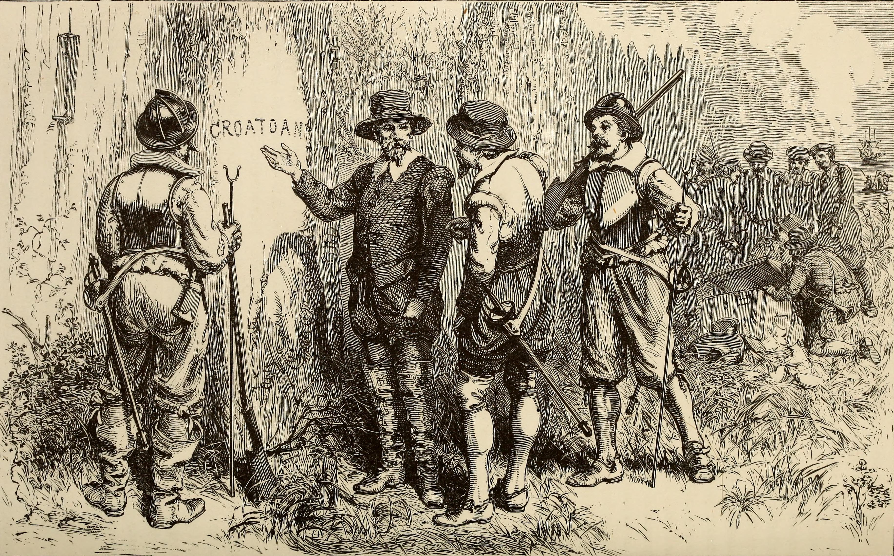

Greetings, friend
We are the Spooky Corner Quarterly, an online publisher dedicated to looking into some of the worlds oldest questions. Are we alone? Is there a life after this one? We strive to provide enjoyable and thought provoking content that represents all sides of the debate. Also we include Op-Ed's from our editor and friends to bring together the very best insights from a range of thinkers. For the simple cost of seeing ads we provide a quarterly online publication that provides the best information compiled from years of research and experience in the field. We also release special issues and content from time to time, both on this site and via other media.
The Strange World in the News
Squids from Space?
That's right, new evidence is showing how little we know about Cephalopods and points to them possibly being otherworldly. While it isn't conclusive, the hypothesis indicates how much we still have to learn about this group of animals.
Sedona is a hometown favorite
Being a publisher in Arizona, we are well aware of the stories from Sedona. They are some of our favorites!
What happened at Enfield?
It's one of the most talked about cases of all times and has spawned a number of books and a film. But the story actually has a robust amount of information from multiple angles.
Sponsored by:
Currently in the Curiosity
Corner: Loretto Chapel
Origins

Sometime in the late 19th century, a chapel known as Loretto Chapel was in need. Santa Fe at this time was in the heart of the Wild West. This small chapel was built in New Mexico and the second floor needed an adjoining staircase. The chapel was said to be financially unstable. Given this, a group of nuns prayed to the patron saint of carpentry, Joseph. Praying for nearly a week a stranger came to the nuns of the chapel. The Mysterious Stranger built a staircase that is asymmetrical, seems to have no nails, glue or other tool to reinforce binding; and for whatever reason, has thirty-three steps. The man supposedly left before the nuns could pay him for the job. The nuns then came up with an idea to go to the local mill where the Stranger would have gotten the materials. At the mill, no one had seen a man fitting the description of the Mysterious Stranger. Furthermore science, in recent years, has developed to a point where testing can be done to the staircase. It was discovered that the wood for the lumber was of a particular type of tree not native to the Santa Fe region. In more recent years, the chapel has been made into a museum. It has also been the subject of both believers and speculation. Popular culture has absorbed this as it has with many of these types of stories. Unlike many other stories in the realm of the metaphysical, this one has an air of both inspiration and hope. A refreshing change from some of the horrors that are connected to the more spiritual side of these types of phenomenon. Although there are a number of compelling arguments from many sides. Which is perhaps the reason this one has remained so notable.
Some More Information
Before going any further it might be worth stating that these sorts of stories are quite common in the Catholic tradition. This may be due to a couple of factors. One- patron saints are historically a large part of the Catholic belief. Initially many of them were created to represent what were thought of as important parables. St Christopher is a great example of this. Some are more like St Michael and St Gabriel. They are archangels and among the most trusted of God’s angels. While others were living and were recorded as living. St Augustine is prime example of this. St Joseph, of course, is Jesus’ stepfather. While Joseph’s role in the Bible is somewhat limited, in the Catholic faith he is often times held in high regard. Two- Catholics, as well as many types of Protestants, believe that from time to time angels come to our realm. In fact, according to the Catholic tradition, you could’ve met an angel in your life and not even have known it. This isn’t limited to angels, however. Given the status of sainthood, it is also believed in the Catholic tradition that this fairly common.
The staircase itself is quite unique in its design. While there are some similar versions found in history, none of them share all the elements that the Loretto Chapel staircase demonstrates. The spiral shape almost seems to be one solid piece. Interestingly it all seems to be held together by an interlinking configuration, rather than some sort of nailing or glue. Also the type of wood has been said to not only be a nonnative wood, but does not seem to have a historical equal, but does seem to be a Spruce wood. It should be noted that the handrails were installed later by a known carpenter. However given the variations in the story, it is uncertain exactly how long the staircase took to be built. Some estimates are as small as a day, while others claim a few months. Field Note: I never heard a consistent estimate on how long something like this would take. It was more common to hear about the complexity.
Some Theories
The most persistent theories are either it happened the way the nuns say, or it didn’t. Which, quite frankly, is refreshing in a case like this. The clarify some argue that there is a trackable lead. But often times in a case like this, because the events happened so long ago, people can make up any theory they want and get little to no blowback. In regards to the story passed down about the chapel, it isn’t the first story in which unexplained things have happened at a church. There are the cases of the visions of Mary in Mexico, better known as the Lady of Guadalupe, and the statue in Buga, Colombia. Field Note: In my research of this, I found more people that believed that the staircase’s origin was likely confirmed by the nun’s story, although I only found a handful of people that had heard the story. Even a number of Catholics hadn’t heard the story.
Given that there are thirty-three steps in the staircase, references to the Knight’s Templar have been made. While this is seems as likely as any other theory, it is worth mentioning that almost all Christian sects utilize some numerology. In defense of the Knight’s Templar, they were quite capable in their own time, and it is argued that even if the group had dissolved, new groups would likely be formed in their place. Plus, of all the sects in Christianity, the Knight’s Templar were probably the most obsessed with numerology.
Some skeptics have pointed to some documents from the mill, but upon examination they don’t seem to be conclusive. Skeptics also point to a number of staircases throughout the world that have somewhat similar designs. But upon further examination of these designs we find that there’s not really another with the exact same design. Even some master carpenters marvel at its complexity. Although the idea of a stranger coming and leaving before being paid is not exactly the most unexplainable occurrence, there has been almost no coherent argument to the contrary. Although there are few definitive leads in this case, it may just be possible that the story is the point. Perhaps figuring this one out would diminish the majesty and wonder of such an account.
About the Editor
Chris Stoffle is a writer, researcher, and lifelong lover of stories. The paranormal has always lived on the periphery of his life from the time as a child in Catholic school and through high school and college when he began learning of the works of prominent skeptics. While his beliefs evolved overtime, Stoffle always retained something in the back of his mind asking for more answers. Although those answers weren’t always there, this methodology has brought Stoffle to learn about many points of view, even some wildly different than his own. This has served Stoffle in a way that would prove invaluable as he got older. Studying history, science and art Stoffle has developed a method that applies the best of as many points of view as he’s come across. Stoffle is also an accomplished writer spending more than two decades honing his craft. His favorite writers include everyone from Ray Bradbury to Hunter S Thompson, and Michael Crichton to Ralph Waldo Emerson. Stoffle is also a co-founder of the Spooky Corner Quarterly, with the idea of a quarterly publication dedicated to creating a dialogue. It’s not important to Stoffle, whether or not a side is proven, but instead wants to create an environment of imagination. To everyone involved at the Spooky Corner Quarterly it’s about curating wonder.
Chris Stoffle is also the founder of a web development company and fiction publishing company. He has been a writer for decades, writing alongside his friends in a writer’s book club. Stoffle also published poetry throughout his early adulthood, including a few collections. While Stoffle is an accomplished fiction writer and poet, nonfiction is among the new horizons in his craft. At the Spooky Corner Quarterly, Stoffle likes to bring his abilities of fiction and blend it with a scientific writing style and an extra dash of journalism.
A question for Chris: What do the words myth or mythology mean to you? In today’s slang it means a falsehood, and while I use it in this fashion as well, I was recently reminded of the ideas these words use to convey. A myth is a story, but more than that, a story that helps us shape the world as we know it. Dan Ariely in an interview once explained that data as a method of conveying can be problematic, to paraphrase him, data doesn’t really sit in our head and stories are what actually tie everything together.
It should be stated that no one should take my word for it and be on about their day, in fact I would say I could be entirely wrong. But I wanted to explore this idea of the definitions of myth and mythology, because I myself find that it is easy to think of these things as wholly false or even wholly true. When I started this online publication, I really only had one goal in mind, make a living talking about some of the things I really love. This stuff excites me. Venturing into the unknown with only vague stories leading the way. A researcher’s life for me!
Currently in the Curiosity
Corner: Lost Colony of Roanoke
Origins
In the 16th century the gaps of the map of the world could almost be completely drawn in. The New world was becoming more familiar with each passing voyage. The Dutch and English have begun exploring the new side of the globe, and creating some of the most important colonies for coming eras. One of these establishments was known as Roanoke. For centuries now, it has represented one of the greatest mysteries in human history. Roanoke was established by the English in modern day North Carolina in the 1580’s. Almost as soon as it began the first attempt at a colony would end in failure. Early in the second attempt at establishing a settlement, resupplying wasn’t always frequent and reliable. This was about two years after the first failed attempt.
Harsh supply shortages would create an environment of desperation. John White would leave to resupply the island. This journey would take him back to England, therefore already making it a longer journey. Tensions in Europe would make it so that three years would pass before John White could return. Not only was his family gone, but so was the whole colony. At least one hundred and ten people would never be seen again in recorded history. The only perceivable indication of where they may have gone was carved on a few trees, the letters C-R-O and the word CROATOAN. Still to this day it represents the apex of cold cases.
Some More Information
During the 1580’s until a little after 1600, the British and Spanish would engage in a series of conflicts although no war would be officially declared. Naval warfare was on the raise in this era, and this war was no exception. With the addition of the Americas to the map, a new and expansive theater of war would open. Warfare in the Atlantic became both a norm and a hindrance. This is partially the reason White wouldn’t return quickly. But this war also consumed logistics and time that would normally be used to delegate and solve many of the day-to-day issues of running a kingdom.
This era of American history is filled with the richness of many tribes of Native Americans. During the 16th century, the might of the Native nations was unquestionable. While it wasn’t picture perfect, it was still made up of groups working diplomatically with one another on a fairly regular basis. Also this early in colonizing history it mentions between some Europeans and Native groups. While the French maintain diplomatic relations, the British didn’t alway manage to do the same, although some scholars may argue that the early years of colonization wasn’t as tense for the vast majority of situations.
Some Theories
Given the number of years since the events of Roanoke, a wide slew of theories have have seen the light of day. But unlike other cold cases, none of the theories feel satisfactory. This may have given rise to some of the more theatrical and less insightful versions of events. Ultimately, however, give the lack of real evidence, any theory is as good as any other. Of course other possibilities arise from all points of view and once in a while the story gets the pop culture rebirth. While this inspires new generations to look into this grand mystery. Perhaps, this above all the rest was never meant to be solved but is supposed to a mystery.
One of the more accepted theories among historians is the idea of the colonists integrating into the native American tribes. As food sources would continue to decline, the Tribes would represent one of the only sources of supplies of all kinds, but most notably food and medicine. Given that there is little to no evidence of tense relations, it is likely that all paths could lead to the only localized sources of sustainability. In addition to this, it wasn’t uncommon for this to happen in colonial America. While the number of integrated people into the Native populations is probably marginal, it’s happened frequently enough to be recorded through American history. Field Note: Later in colonial American it wasn’t uncommon for Native Tribes attack settlements for the sole purpose of finding people to integrate into the local tribe.
Another theory that has gained traction in historian circles is the idea that the colonists attempted to sail back to Europe. While to some it may seem farfetched, the idea may have seemed good to the desperate colonists. There wouldn’t have been an easy line of communication to update the island and given the war it may have seemed like the only option was to attempt a journey back. This would also open the possibility that they would have been sunk by weather the Spanish. There have been questions about the ships, some accounts claim that they would have had access to a large ship, and upon White’s return that ship wasn’t found.
Depending on point of view, there is a solid argument that there is some evidence of conflict. While there weren’t any clear signs of battle or violence, there were reports that the colony was fortified. This has given rise to the theory of an attack from one of the Native Tribes. What’s difficult about this is that the reports lack any details about burials or some other indication of wounded people.